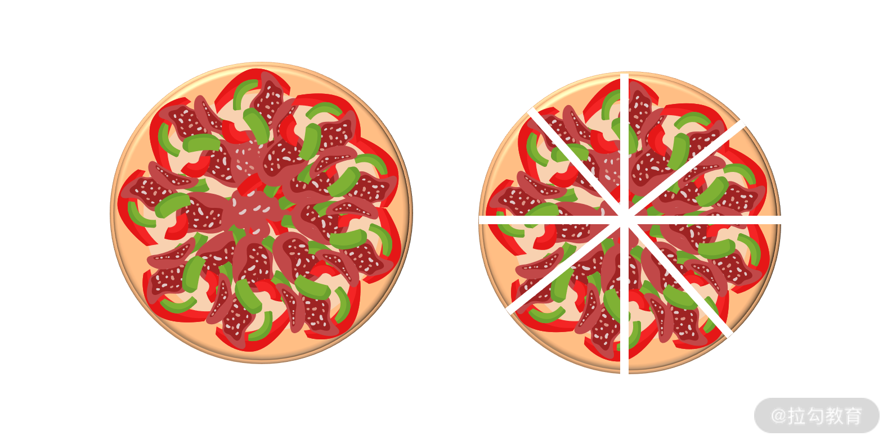
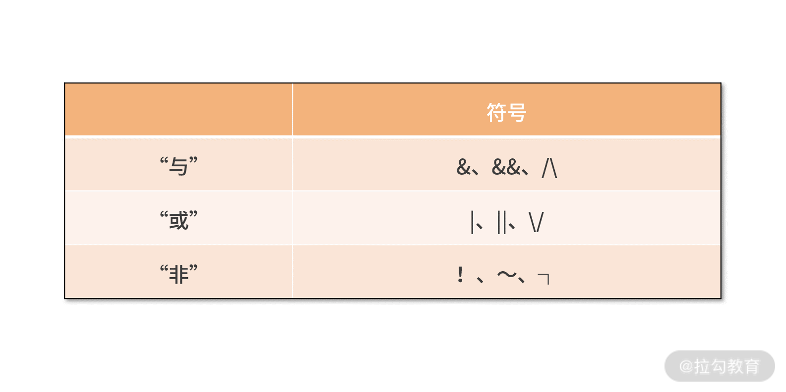
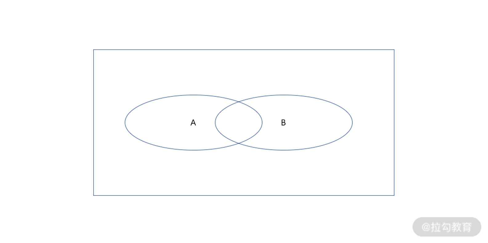
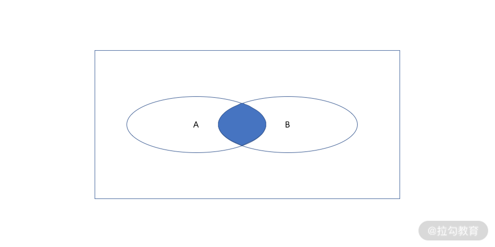
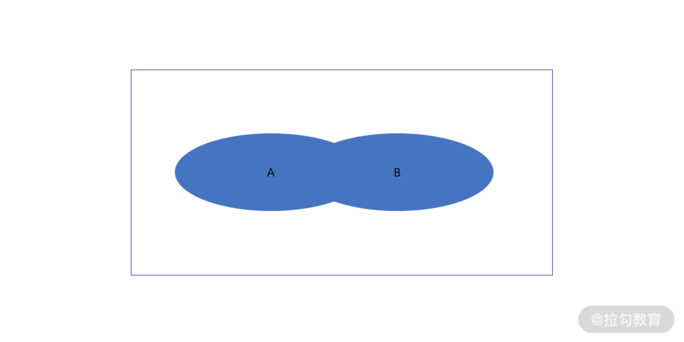
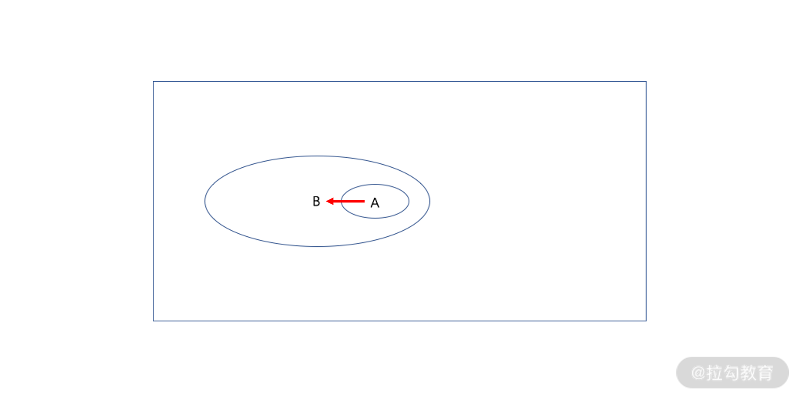
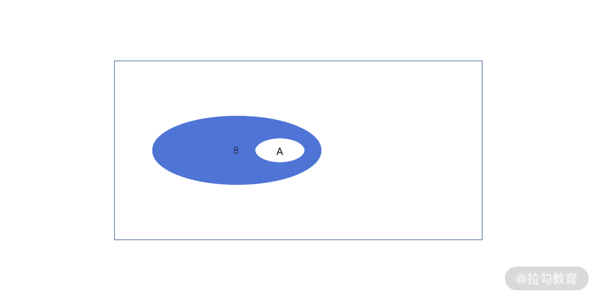

- 00 开篇词 数学，编程能力的营养根基.md.html
- 01 从计数开始，程序员必知必会的数制转换法.md.html
- 02 逻辑与沟通，怎样才能讲出有逻辑的话？.md.html
- 03 用数学决策，如何规划好投入、转化和产出？.md.html
- 04 万物可数学，经典公式是如何在生活中应用的？.md.html
- 05 求极值：如何找到复杂业务的最优解？.md.html
- 06 向量及其导数：计算机如何完成对海量高维度数据计算？.md.html
- 07 线性回归：如何在离散点中寻找数据规律？.md.html
- 08 加乘法则：如何计算复杂事件发生的概率？.md.html
- 09 似然估计：如何利用 MLE 对参数进行估计？.md.html
- 10 信息熵：事件的不确定性如何计算？.md.html
- 11 灰度实验：如何设计灰度实验并计算实验的收益？.md.html
- 12 统计学方法：如何证明灰度实验效果不是偶然得到的？.md.html
- 13 复杂度：如何利用数学推导对程序进行优化？.md.html
- 14 程序的循环：如何利用数学归纳法进行程序开发？.md.html
- 15 递归：如何计算汉诺塔问题的移动步数？.md.html
- 16 二分法：如何利用指数爆炸优化程序？.md.html
- 17 动态规划：如何利用最优子结构解决问题？.md.html
- 18 AI 入门：利用 3 个公式搭建最简 AI 框架.md.html
- 19 逻辑回归：如何让计算机做出二值化决策？.md.html
- 20 决策树：如何对 NP 难复杂问题进行启发式求解？.md.html
- 21 神经网络与深度学习：计算机是如何理解图像、文本和语音的？.md.html
- 22 面试中那些坑了无数人的算法题.md.html
- 23 站在生活的十字路口，如何用数学抉择？.md.html
- 24 结束语 数学底子好，学啥都快.md.html
02 逻辑与沟通，怎样才能讲出有逻辑的话？
你好，欢迎来到第 02 课时—— “与”“或”“非”：怎样才能讲出有逻辑的话？
我们都知道，语言沟通的背后是说话人逻辑思维的过程，单句与单句间、事件与事件间，都是靠关联词联系起来的，所以这节课我将从数学逻辑的角度，向你论述语言沟通背后的原理。
我将先向你介绍这一课时的根本思维原则 —— MECE 原则，再从“与”“或”“非”“异或”，以及“文氏图”这些运算方式出发，带你深入剖析沟通表达中的关联词。
从日常沟通看逻辑
在日常的沟通中，代表逻辑关系的词汇有很多，例如“而且”“或者”“但是”“如果...那么...”“因为...所以...”等关联词。
在我们使用这些词汇的时候，其实都是在表达事件之间的逻辑关系，如果你的逻辑是混乱的或者是不清晰的，就会出现关联词乱用的情况，从而造成沟通效率低下，甚至传递错误信息。
我们先来看一个例子，事情背景是某个系统需要从 A 环境迁移过渡至 B 环境，大家可以注意一下这段话有什么表达不妥之处。
“为了保证系统的稳定过渡，并且保证在过渡期，各个使用方的需求正常迭代，因此系统拟定共分为三期：过渡期、实验期、切换期。其中，过渡期采用某技术，保证数据系统打通；实验期通过 AB 实验，验证流程正确。”
从字面来看，我们能脑补出说话者要做什么事情，以及做这些事情的目的和方法。但是，从逻辑的视角来看，上面一段话至少包含了以下几个问题：
- “保证系统的稳定过渡”和“在过渡期内，各个使用方的需求正常迭代”，这二者的语意是包含关系，并不是并列关系，用 “并且” 进行连接，不合理。
- 为了保证系统的稳定过渡，因此需要分为三期。这里构不成因果关系，用 “因此” 进行连接，不合理。
- 过渡期怎样怎样，实验期怎样怎样，切换期呢？丢了一个重要环节，不知道需要做什么事情。
这些问题看似是语文问题，实际是背后思考的逻辑问题。
而逻辑思维对于程序员的代码编程能力非常重要，所以接下来我将向你介绍“MECE 原则”，帮你提升逻辑能力，MECE 原则非常重要，它将贯穿整个课时内容。
MECE 原则，提升逻辑思维水平
MECE 原则（Mutually Exclusive Collectively Exhaustive）的中文意思是“相互独立，完全穷尽”，简而言之，能够做到不重叠、不遗漏，兼顾排他性和完整性。
MECE 原则是麦肯锡提出的一种结构化思考方式，无论是报告撰写，提案演讲，业务分析，它是一种很好的思维方式。
它就像是切比萨一样，一个大比萨，用 4 刀切成了 8 份，每一份之间彼此不重叠（排他）；所有的小比萨不遗漏（完整）地合在一起，又还原了大比萨。

我们来看个例子，公园的票价问题。公园的门票价格是 20 元，优惠票包括了老人票和儿童票。价格制度为：
- 不到 10 岁的儿童免费；
- 10 岁以上的未成年人半价；
- 60 岁及以上的老人免费；
- 其他成年人无折扣。
我们用 MECE 原则来看一下这里的定价制度，就会发现这个制度不满足“不遗漏”“不重叠”的要求。比如，这让 10 岁的小琳很尴尬，她到底是算不到 10 岁免费呢？还是 10 岁以上未成年的半价呢？至少，从上面的描述是看不出来的。
用程序语言来看，上面价格对应的代码就是：
org_price = 20
age = 10
if age < 10:
discount = 0.0
if age > 10 and age < 18:
discount = 0.5
if age > 60:
discount = 0.0
if age >= 18 and age < 60:
discount = 1.0
final_price = discount * price
显然，当 age 为 10 的时候，程序不会走任何一个策略分支，于是代码会出现错误。
在解决类似的逻辑问题时，一定要注意所有边界值的可能性。原则上，每个可行值（尤其是边界值）能且只能落在一个策略分支中。
一个常用的分析方法就是画线法，如下图所示。画一根数轴，代表所有的可行值，再使用 if 语句分解问题，空心点表示开区间，实心点表示闭区间。

画线法
逻辑运算：“与”“或”“非”“异或”
接着我们来深入到逻辑的运算，首先看一下命题的概念。
命题是一个描述客观事物的陈述，它包含了正确或错误两个可能性。
- 如果命题正确，我们一般用 true 或 1 来表示；
- 如果命题错误，我们一般用 false 或 0 来表示。
有了命题，我们就可以对命题和命题进行逻辑计算。这很像有了数字之后，就有了加减法。逻辑运算的对象是命题，它根据命题的真假进行计算，并且最终再输出真或者假，作为结果。
逻辑的运算，通常有“与”“或”“非”，以及叠加在这之上的“异或”。
1.最基础的“与”“或”“非”。
- 逻辑 “与”—— A 并且 B，在 Python 语言中也记作 A and B。只有命题 A 和命题 B 同时为真的时候，A and B才是真，否则都是假；
- 逻辑 “或”—— A 或者 B，在 Python 语言中也记作 A or B。命题 A 或者命题 B 有一个为真的时候，A or B 就是真，否则为假；
- 逻辑 “非”——不是 A，在 Python 语言中也记作 notA。命题 A 为假的时候，not A 就是真，否则为假。
值得一提的是，在不同学科、不同编程语言中，对于逻辑的“与”“或”“非”的符号表示并不相同，可能的符号有：

虽然符号不一样，但是计算结果都是一样的。
2.从文氏图看“异或”
“异或”在 Python 语言中也记作A^B。命题 A 和命题 B 的真假不同时，则 A^B 为真，否则为假。一个好的记忆方式是，异为 1，即 A 和 B 的真假性相异（不同），则结果为 1（为真）。
一个形象判断逻辑关系的方法是，便是文氏图，如下图所示，假设在文氏图中有两个命题 A 和 B，用椭圆形的区域表示一个命题为真的地方，而椭圆区域外则表示这个命题为假的区域。

文氏图
通过分析两个命题的椭圆形，在图中的位置关系，就能得到每个运算的结果。接下来，我先用文氏图演示“与”“或”“非”的运算过程，最后再向你讲解什么是“异或”。
- “与” A and B
根据逻辑运算的定义，如下图所示，A and B 为真的区域就是，椭圆 A 和椭圆 B的交集（蓝色区域）。

A and B 文氏图
- “或” A or B
如下图所示，A or B 为真的区域，便是椭圆 A 和椭圆 B 的并集（蓝色区域）。

A or B 文氏图
- “非” not A
如下图所示，not A 为真的区域，便是椭圆 A 以外的部分（蓝色区域）：

not A 文氏图
- “异或” A^B
A^B，表示 命题 A 和命题 B 的真假不同，也就是真假相异，故是下方文氏图的蓝色区域。

A^B 文氏图
你会发现，“A^B”的蓝色区域，就是上面“A or B”区域减去“A and B”区域，即A^B = (A or B) - (A and B)。
讲完命题的逻辑运算后，我们进入工作实践场景，向你讲解工作中的命题逻辑处理问题。
逻辑处理：MECE 原则与代码
在工作中需要处理命题的逻辑关系时，一定要在满足上文提及的MECE 原则的基础上进行代码开发。
1.不遗漏原则
当你在处理逻辑关系时，不管有多少个可能的 if 语句，哪怕你觉得你已经在 if 中穷举了所有的可能性，也尽可能用else进行一个兜底，这是对代码潜在风险的规避。
例如，下面一段代码从结构来看，它虽然没有错误，但不利于解读、维护。
def fun(x):
if x == 1: #命题A
return 1
if x == 2: #命题B
return 2
不管命题 A 和命题 B 是否包含了全部的可能性，你都需要用个else进行兜底，因此更好的方式是：
def fun(x):
if x == 1: #命题A
return 1
if x == 2: #命题B
return 2
else: #兜底
return 0
2.不重复原则
就说明每个可能的输入，只能进入唯一 一个策略分支，否则就有可能造成结果不受控制。这就说明，在代码开发中，尽可能少用多个 if 语句，而改用 elif 语句。
elif 是 else if 的合体，功能上他们二者完全可以互相替代，从逻辑的表达来看，elif 更像是对 if 的兜底。
例如下面一段代码，风格就有些不好，容易引起不必要的代码风险。
def fun(x,y):
a = 0
if x < y: #命题A
a = 1
if x >= y: #命题B
a = 2
else: #兜底
a = 0
return a
不管你的命题 A 和命题 B 是否有交集，你都需要尽可能少地使用多个并列无关的 if 语句，而改用 elif，例如：
def fun(x,y):
a = 0
if x < y: #命题A
a = 1
elif x >= y: #命题B
a = 2
else: #兜底
a = 0
return a
从数学思维和代码角度，深入了解“逻辑”后，我们重新回到日常沟通中。
从逻辑回归到沟通
我们最开始提到了很多日常沟通的词语，例如 “而且” “或者” “但是” “如果...那么...” “因为...所以...”等关联词。
那么，这些关联词跟我们这个课时讲到的 “与” “或” “非” 有什么关系呢？我们结合逻辑运算和文氏图进行分析。
1.“而且”与“或者”
“而且”，顾名思义，就是 A and B。例如，小琳很漂亮（A），同时小琳很聪明（B）。经过逻辑运算后，得到小琳漂亮且聪明（A and B）。
“或者”，顾名思义，就是 A or B。例如，这个暑期，小琳打算去海南，否则小琳就打算去辽宁。经过逻辑运算后，得到这个暑假，小琳打算去海南或者辽宁（A or B）。
你可以发现“漂亮”和“聪明”，“海南”和“辽宁”都是相互独立的。所以你在使用“而且”和“或者”沟通时，要注意命题 A 和命题 B 也最好是相互独立的，也就是 A 与 B 应符合上文讲的 MECE 中的不重复原则。
下面我将通过三个反例说明问题：
- 例1，小琳很聪明漂亮（A），而且小琳很聪明（B）。
虽然语义上无误，读者也能理解，但从沟通的角度来看，这句话非常不妥帖。
- 例2，为了保证系统的稳定过渡（A），并且（即而且）保证在过渡期内，各个使用方的需求正常迭代（B）。
此时，命题 A 显然包括了命题 B，与例1 如出一辙。
- 例3，小琳是东北人（A），或者小琳是北方人（B）。
“北方”包含了“东北”，相互重复，在表达上绕了一个大弯，仅表达小琳是北方人。
通过这三个反例我们可看出，缺乏逻辑性的关联词，虽然不会影响语义表达的正误，但却会让沟通变得冗杂，不够直接明了，从而降低了沟通效率。
所以，沟通表达与逻辑思维有着直接关系。接下来，我将讲解“因为…所以…”和“虽然…但是…”这对更体现逻辑思维的关联词，也请你好好揣摩一下这对关联词之间的相互逻辑关系。
2.因为……所以……
“因为...所以...”，是一种逻辑推理，即由 A 推导出 B。
“因为...所以...”的文氏图表达如下图所示，A 包含于 B，B 包含了 A，在 A 区域内，也一定会在 B 区域内，因为存在于 A，所以存在于 B，这是个由“小”推导出“大” 的过程。

“因为...所以...”文氏图
在使用“因为...所以...”沟通时，一定要注意命题之间是否具备了充足的因果关系。否则，就会出现让人反感的逻辑错误。
先举一个恰当的例子：
因为小琳聪明漂亮（命题 A），所以小琳很漂亮（命题 B）。
可以看出命题 A 和 命题 B 两者有充足的包含和被包含的因果关系。
下面再举一个反例：
因为要保证系统的稳定过渡，并且保证在过渡期内，各个使用方的需求正常迭代，所以系统拟定共分为三期：过渡期、实验期、切换期。
长话短说，即“因为要保证稳定过渡，所以拆分为三期”。
那么要保证稳定过渡，就必须拆分为三期吗？显然并不是，拆分为四期、五期，全凭开发者自己的设计方案，都是可以的，显然这两者不具备强烈的因果关系。
3.虽然……但是……
再来看看“但是”，一般也用作“虽然...但是...”，它表示的是一种转折关系，比如：
虽然小琳学习成绩不好，但她一直很努力。
在人们的潜意识中，成绩好的人一定是努力的人，这就是“因为她成绩好（A），所以她是个努力的人（B）”的默认关系；反之，努力的人（B），学习成绩不一定很好（非 A），这就构成了转折，于是得到“虽然小琳成绩不好（非 A），但是她很努力（B）”。
在这一例子的逻辑过程中，你会发现 “虽然（非A）…但是（B）…” 这个关联词与 “因为（A）...所以（B）...” 刚好相反。
正如下图所示，“因为A，所以B”，也可以用作描述“虽然非A，但是B”。

“虽然...但是...”文氏图
所以我们在验证“虽然…但是…”这个关联词是否使用妥帖时，可以先将其转为因果关系，我会通过以下几个例子向你演示这一过程。
- 虽然小琳不是单身（非A），但是她是个东北人（B）。
将这句话转为因果关系，则有“因为小琳是单身（A），所以她是东北人（B）”。显然，这里就构不成任何的因果关系了。（✖️）
- 虽然小琳成绩不太好（非A），但是她并没有自暴自弃（B）。
将这句话转为因果关系，则有“因为小琳成绩好（A），所以她没有自暴自弃（B）”。显然，这里的因果性很强。这里的“但是”使用得非常恰当。（☑️）
- 虽然小琳不是单身（非A），但是她的成绩依旧很好（B）。
将这句话转为因果关系，则有“因为小琳是单身（A），所以她的成绩好（B）”。这里的因果性就很弱了，也因此“但是”使用得并不完全恰当。（✖️）
在日常生活中，很多时候的“但是”是被误用的，虽然日常沟通中，不必过度关注这些瑕疵，但在书面语的环境下，就会不太妥帖。
小结
“怎样才能讲出有逻辑的话？”学完这一课时的你，对这个问题肯定有了自己的答案，并对“逻辑”与“沟通”之间的关系有了更深的理解。
其实，在日常沟通中的很多场景下，逻辑词的使用并没有那么高的要求，人们往往会根据自己的用词偏好去说话，也不必过度吹毛求疵。
但是，当你掌握了很好的逻辑思维方式后，你与人沟通表达时，便会更有说服力，沟通效率也会大大提升；分析事物问题时，也会更加周密完善，一针见血。
比如，当你站在逻辑的视角来重看上文的这些例子时，你就会发现很多逻辑并不规范，尤其是使用了文氏图这一工具之后，你便能一针见血地看到本质，清晰地分析出这些逻辑关系背后的漏洞。